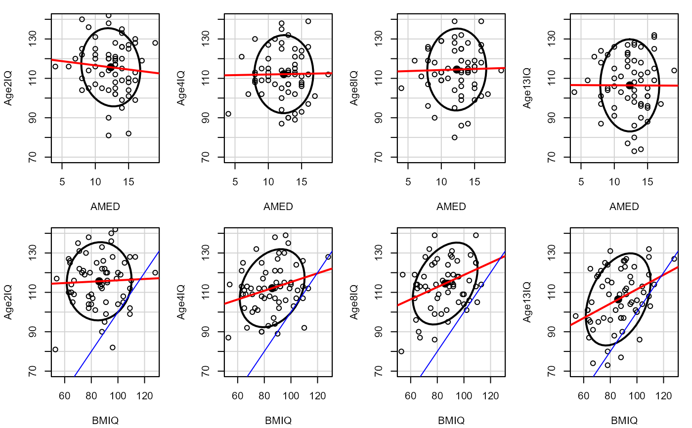
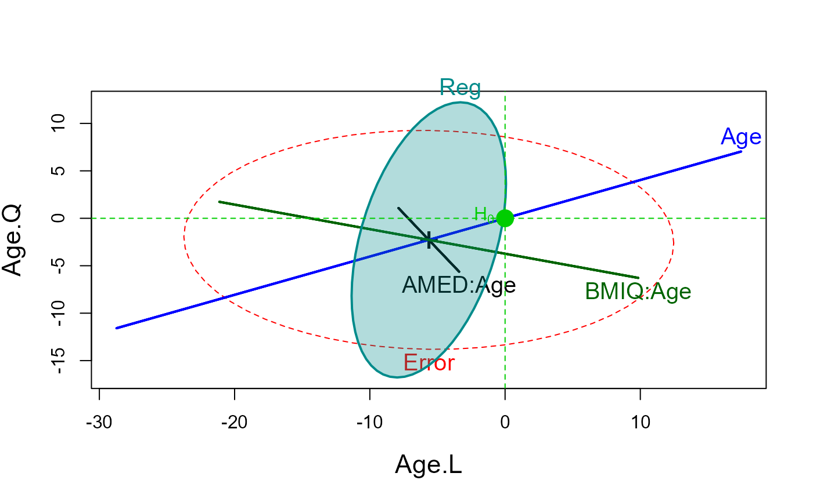

Adopted.RdData are a subset from an observational, longitudinal, study on adopted children. Is child's intelligence related to intelligence of the biological mother and the intelligence of the adoptive mother?
The child's intelligence was measured at age 2, 4, 8, and 13 for this sample. How does intelligence change over time, and how are these changes related to intelligence of the birth and adoptive mother?
AdoptedA data frame with 62 observations on the following 6 variables.
AMEDadoptive mother's years of education (proxy for her IQ)
BMIQbiological mother's score on IQ test
Age2IQIQ of child at age 2
Age4IQIQ of child at age 4
Age8IQIQ of child at age 8
Age13IQIQ of child at age 13
Ramsey, F.L. and Schafer, D.W. (2002). The Statistical Sleuth: A Course in Methods of Data Analysis (2nd ed), Duxbury.
This data set is identical to ex1605 in the Sleuth2
package.
Friendly, M. (2010). HE Plots for Repeated Measures Designs. Journal of Statistical Software, 37(4), 1-40. doi:10.18637/jss.v037.i04 .
Skodak, M. and Skeels, H.M. (1949). A Final Follow-up Study of One Hundred Adopted Children, Journal of Genetic Psychology 75: 85--125.
# Treat as multivariate regression problem
Adopted.mod <- lm(cbind(Age2IQ, Age4IQ, Age8IQ, Age13IQ) ~ AMED + BMIQ,
data=Adopted)
Adopted.mod
#>
#> Call:
#> lm(formula = cbind(Age2IQ, Age4IQ, Age8IQ, Age13IQ) ~ AMED +
#> BMIQ, data = Adopted)
#>
#> Coefficients:
#> Age2IQ Age4IQ Age8IQ Age13IQ
#> (Intercept) 117.63046 93.33771 88.03739 76.84827
#> AMED -0.44136 -0.02073 -0.01216 -0.16063
#> BMIQ 0.04001 0.22172 0.30961 0.36747
#>
require(car)
# test overall multivariate regression
print(linearHypothesis(Adopted.mod, c("AMED","BMIQ")), SSP=FALSE)
#>
#> Multivariate Tests:
#> Df test stat approx F num Df den Df Pr(>F)
#> Pillai 2 0.1964576 1.552235 8 114 0.147134
#> Wilks 2 0.8065020 1.589253 8 112 0.135846
#> Hotelling-Lawley 2 0.2362528 1.624238 8 110 0.125939
#> Roy 2 0.2195371 3.128404 4 57 0.021426 *
#> ---
#> Signif. codes: 0 '***' 0.001 '**' 0.01 '*' 0.05 '.' 0.1 ' ' 1
# show separate linear regressions
op <- par(mfcol=c(2,4), mar=c(4,4,1,1)+.1)
for (i in 3:6) {
dataEllipse(as.matrix(Adopted[,c(1,i)]),
col="black", levels=0.68, ylim=c(70,140))
abline(lm(Adopted[,i] ~ Adopted[,1]), col="red", lwd=2)
dataEllipse(as.matrix(Adopted[,c(2,i)]),
col="black", levels=0.68, ylim=c(70,140))
abline(lm(Adopted[,i] ~ Adopted[,2]), col="red", lwd=2)
abline(a=0,b=1, lty=1, col="blue")
}

par(op)
# between-S (MMReg) plots
heplot(Adopted.mod, hypotheses=list("Reg"=c("AMED", "BMIQ")),
main="IQ scores of adopted children: MMReg")
pairs(Adopted.mod, hypotheses=list("Reg"=c("AMED", "BMIQ")))
if(requireNamespace("rgl")){
heplot3d(Adopted.mod, hypotheses=list("Reg"=c("AMED", "BMIQ")),
col = c("red", "blue", "black", "gray"), wire=FALSE)
}
#> Loading required namespace: rgl
# Treat IQ at different ages as a repeated measure factor
# within-S models & plots
Age <- data.frame(Age=ordered(c(2,4,8,13)))
Anova(Adopted.mod, idata=Age, idesign=~Age, test="Roy")
#>
#> Type II Repeated Measures MANOVA Tests: Roy test statistic
#> Df test stat approx F num Df den Df Pr(>F)
#> (Intercept) 1 115.669 6824.5 1 59 < 2.2e-16 ***
#> AMED 1 0.002 0.1 1 59 0.737878
#> BMIQ 1 0.126 7.5 1 59 0.008302 **
#> Age 1 0.712 13.5 3 57 8.911e-07 ***
#> AMED:Age 1 0.014 0.3 3 57 0.845454
#> BMIQ:Age 1 0.122 2.3 3 57 0.085792 .
#> ---
#> Signif. codes: 0 '***' 0.001 '**' 0.01 '*' 0.05 '.' 0.1 ' ' 1
# within-S plots
heplot(Adopted.mod, idata=Age, idesign=~Age, iterm="Age",
cex=1.25, cex.lab=1.4, fill=c(FALSE, TRUE),
hypotheses=list("Reg"=c("AMED", "BMIQ"))
)
